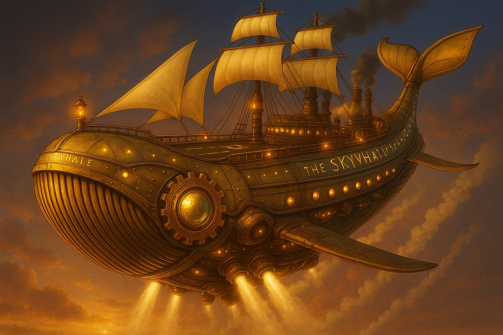

Archive Gallery
Browse the Sky Whale world
Use the filters to jump between the airship, heroes, villains, creatures, and story-page artwork. Click any image to open the full viewer.
Steampunk • Graphic Novel • Original Story World
Character art, airship concepts, graphic novel pages, villains, relics, and worldbuilding pieces from Christina Wright’s steampunk adventure universe.

Archive ReadyArchive Gallery
Use the filters to jump between the airship, heroes, villains, creatures, and story-page artwork. Click any image to open the full viewer.